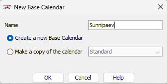
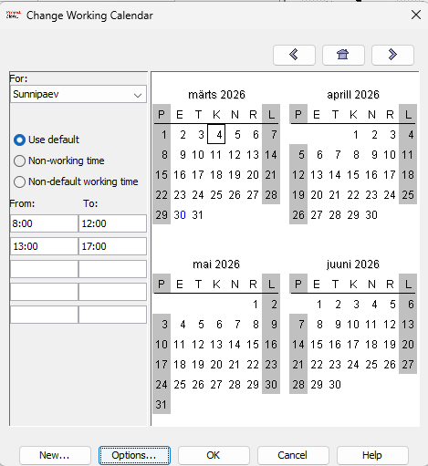
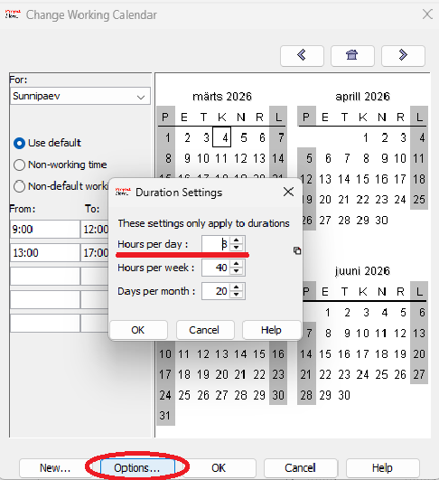
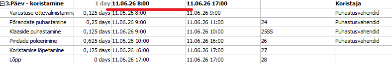
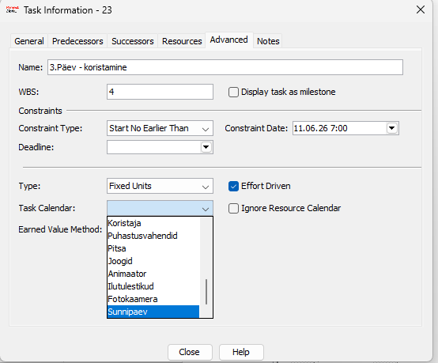
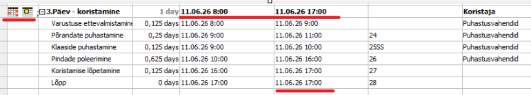

1. Uue kalendri loomine
- Avage ProjectLibre.
- Valige File → Calendar (Projekt → Muuda tööaega).
- Klõpsake Create New Calendar (Loo uus kalender).
- Andke kalendrile nimi (näiteks "Minu töökalender").

2. Tööaja muutmine
- Määrake tööaeg iga nädalapäeva jaoks (näiteks E–R 9:00–17:00).

- Kui soovite midagi muuta, kasutage Duration seadeid (näiteks tööpäeva kestus).

3. Kalendri kasutamine
- Kalendri rakendamiseks topeltklõpsake ajaväljal oma kalendris.

- Seejärel minge menüüsse: Advanced → Task Calendar ja valige oma kalender.

- Project arvestab määratud tööaega.

Kalendri mõju ajakavale
- Töö- ja puhkepäevad mõjutavad ülesannete kestust.
- Tööaeg määrab ressursside kättesaadavuse.
- Erandid (pühad) võivad tähtaegu edasi lükata.